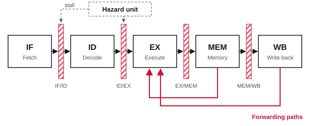

MIPS pipelined processor
Built with Verilog, AMD Vivado, FPGA
A five-stage pipelined MIPS processor with a hazard unit that forwards operands and stalls when it has to, running on a real FPGA board.
More about the processor
Swipe sideways to see the whole diagram.